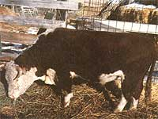

Raise Grass-Fed Beef
18 million tons of grain protein is wasted on livestock feed. You can save money by feeding grass to cattle. Differences in meat quality are discussed. Feeding magnesium to cows prevents a disease called grass tetany, grass staggers or wheat past
By Helen Molitor
May/June 1980
Every year, North Americans waste more than 18 million tons of protein by feeding livestock on grain. A steer, you see, must eat 21 pounds of grain protein in order to produce one pound of beef protein . . . so 20 pounds of the valuable nutrient is lost in the process.
It is commonly assumed, of course, that grain-fed beef is the world's best . . . and if you've ever wrestled with a chunk of elderly range cow, you may agree. However, the "fossil" you tasted then wasn't typical of real grass-fed beef, because such meat can be as tender as any touted commercial cut . . . and much tastier, as well.
So if your land produces hay-or if your climate is such that you can keep cattle on pasture for a good part of the year-you can save money by growing your own feed. Furthermore, even if you have to buy your supply of hay, you'll find such feed to be much less expensive than grain and a better nutritional buy than most folks realize: Average-to-good hay is more than half digestible nutrients, while grains-despite their high prices-are only about 80% digestible.
PRODUCTION-LINE CATTLE
When you consider all the advantages of grass-feeding, you'd think there'd be more livestock raised in such a manner . . . but beef is big business, and commercial cattle operations are huge and streamlined. Young steers are weaned early and sent to large feedlots to fatten quickly on grain. Some such "cow factories" hold more than 10,000 animals, yet they don't require much area, as compared to the amount of land needed by even a modest number of grazing cattle. Thus, the feedlot owner's investment and taxes are lower than those of a farmer who pastures his or her beasts.
Then, too, when nobody pays much attention to individual animals (as is the case in feedlots), a grain diet produces a more uniform meat product . . . especially when it's backed by hormone shots to increase the beasts' appetites. Consequently, enormous feedlots supply the gigantic packing plants, and the assembly-line steaks just keep moving right along.
But families who raise their own beef don't need such super-efficiency, and they can use the extra 200 to 300 pounds of meat usually found on an animal that's fleshed out naturally . . . particularly when that extra weight is meat, as opposed to feedlot fat.
My husband and I have raised Hereford and Angus cattle on grass for six years now, and our old-time rancher neighbors in Alberta., Canada-which is famous for its cattle-started us off in our endeavor by providing us with the answers to three key questions: How is grass-fed beef different from feedlot meat?
What is the best way to manage pasture and winter feeding? And how should carcasses be treated if they're to produce the most tender meat? The methods we learned from our friends certainly seem to work, because our customers always reorder, and they usually accompany their requests with comments about our homegrown meat's "real beef flavor".
WHAT'S THE DIFFERENCE?
The most obvious difference between grass-fed and grain-fed beef is in the light, tawny color of the fat on the former. Once the beef is cooked, however, such color differences disappear entirely.
Another dissimilarity is in the amount of fat found on the meat. On the one hand, the man or woman who ranches grass-fed cattle won't waste money raising carcasses that are enveloped in a coating of tallow. On the other hand, poorly managed grass-fed beef won't have as much fat marbled into the meat's texture as will animals that subsist on grain. Therefore, to produce really tender beef, careful feeding and careful hanging are essential.
The third factor to consider is that top grade grass-fed cattle take longer to raise than do feedlot animals, but keep in mind that it's darned expensive to force-feed a steer on grain so he can be killed a year earlier . . . and that the extra time required for a beast on a grass diet produces a carcass-even in a relatively light breed such as Angus-that's about 200 pounds heavier than the 900 pounders now popular with commercial outfits.
IT STARTS IN THE PASTURE
You can start to improve the quality of your meat a long time before slaughter if you pay attention to the rule often voiced by old-time cattle ranchers: Know your pasture.
Your grass and hay will probably be made up of locally favored forage. In Alberta, for example, the standard mixture is alfalfa and brome, while southern U.S. farmers may plant orchard grass and landino clover. But no matter what your climate and soil, there are certain general hay-growing rules that hold true.
First, a pasture that combines grass and legumes has many advantages over a single-crop field. Most legumes are nitrogen fixers and provide higher levels of protein, calcium, and magnesium than grasses do. In addition, their longer root systems keep fields from rapidly becoming sodbound.
Grasses, in turn, reduce the danger of your animals' contracting bloat from the legumes. They also speed up the drying process if you make hay . . . and hold the legumes upright, making cutting easier. Finally, many animals prefer a mixed feed. (By the way, don't be too fanatical about cleaning out weeds. Eliminate any poisonous species, of course . . . but chicory, say-or a few lamb's-quarters-will add some trace minerals to your beasts' diets.)
Remember, too, that both cattle and land benefit by simple rotation grazing.
Any pasture crop can be safely eaten down to about two inches. At that stage there's practically no leaf surface left, so you should move your cattle out. Then, if you watch, you'll notice a basic three stage pattern in the recovering field. For the first few days (three or four in a lush pasture, five or six in drier areas) the grass will grow slowly. But-once some leaves are out-there'll be a burst of growth. During the second stage, the pounds of forage per acre can multiply as much as 10 times in 12 days. Finally, the pasture will reach maturity, the grasses will begin to crowd and dry out, and the nutritional value of the forage will drop.
Unfortunately, separating your pastures with fences costs money. One solution is to use a simple electric fence that can be moved up and down the field as needed. With such a "border", you can grow more beef on a given amount of land, and-should a good year come along-you can make your paddocks smaller and leave some extra hay for cutting. ( The value of that "bonus crop" alone could equal the cost of the fence!)
If you buy your winter fodder, be sure to take a good look at its color . . . and check for mold, dampness, and bad odor. Old-timers usually poke into a bale or stack to pull out an occasional wisp, which they twist-or even chew on a little-to check it for freshness. Such experts aren't just fiddlin' . . . they're looking past the weathered tan outsides and testing the core of the bale for pale green, crispy hay that feels dry but doesn't snap when it's bent. You may want to be tactful in doing so, but be sure to make that examination . After all, you'll eat the cow that eats the hay. (My husband simply takes along a jackknife and a piece of string, and if the seller won't let him open a bale, he doesn't buy!)
WINTER FEEDING AND MANAGEMENT
The customary yearly schedule for raising grass-fed beef goes like this: Wean the calves, as usual, at five to seven months . . . try to start them on grass at least a month before cold weather strikes . . . and-unless you have a year round pasture-put the animals on hay for the winter. Follow that with another summer of grass feed, a second winter on hay, and then a final summer on pasturage to fatten the cattle up and finish fleshing them out.
Summer feeding is, of course, easy. All you have to do is turn the cattle out on your good legume/grass pasture and make sure they have access to water and the usual salt and mineral blocks. But winter feeding takes a little more planning. Therefore, I've included a table (see the sidebar accompanying this article) of recommended winter rations . . . for calves and steers of different weights, older cows, and the young heifers that will provide your future breeding stock.
Certainly, in most parts of the country, cattle grow more slowly in the colder months ... but nothing toughens beef more than a pattern of eating themselves into blubber balls in the summer and starving into boneracks during the winter. So the rations I recommend are meant to produce a steady pound-a-day increase during the first winter, and around 0.8 to 0.9 pound per day for the second winter (depending on the breed involved).
Another important winter feeding consideration is that your animal must get a good supply of vitamin A. During the summer, dark green pasture contains carotene, which cattle can use to manufacture their own "A". But winter feed, whether grass, grain, or hay, is often deficient in the valuable nutrient . . . so you'll have to provide it for your cattle. (Some protein mixes include vitamin A. Otherwise, your feed store will have supplements, probably in powder form.)
If you follow our methods, you should achieve the same good results that we and our neighbors get. By two and a half years, slaughter weights for our small English breeds like Angus and Shorthorns are about 1,100 pounds, while the big exotics such as Charolais and Simmenthals can go as high as 1,400 to 1,500, and Herefords are about halfway between. Your extra year of pasturing can be expected to produce-on the average -at least 200 pounds more beef than would be found on an equivalent feed-lot raised steer . . . and maybe as much as 600 pounds more!
AN OLD-FASHIONED HANGING
After the animal is slaughtered, the carcass should-in order to win the race between the natural enzymes that tenderize beef and the bacteria that may rot it-be quickly chilled and hung in a location with a steady temperature of around 34 to 38°F. If the storage site is much colder, the whole tenderizing process will stop . . . while moisture evaporates from the meat. If it's much hotter, though, the rot-causing bacteria will get to work.
For most people, the easiest place to age beef is in the local locker plant, and many such outfits will cooperate . . . if you know enough to tell them what you want. Here are the facts you need to remember:
A freshly hung carcass feels like a football filled with cold tallow: The surface is taut and the meat is solid. After 10 to 14 days, it starts to feel as though the tallow were just starting to warm up and get a little soft. That's the point at which some small-scale butchers process beef, while a packing plant would have done so days before.
The best beef restaurants, however, wait a little longer . . . and so should you. Give the meat 18 days (or even up to 21 for the big fellows) until the change is complete. The carcass's surface will still be taut and the meat solid after that span of time, but it will feel like a football filled with heavy oil. ( You won't be able to poke a finger into it, but it'll seem as if you could.) That's the time to cut and wrap your meat.
If you follow the methods described in this article-nutritious summer pasture, good winter feeding with vitamin A supplements, steady weight gains, and old-fashioned hanging times you'll find grass-fed beef can be even better than the much publicized grain-fed variety. The meat will be red, firm, and tender . . . with real beef flavor and enough fat to make it succulent. The results, we think, are well worth waiting for.
BUT SOME GRASS CAN KILL COWS
One minute your calf is happily munching away in a spring-green, succulent pasture. Suddenly, the animal starts to run and stagger . .. bellows loudly . . . and collapses. Dashing to its side, you may find the beast temporarily blind. The catastrophe appears to be lead poisoning, but where in the verdant acreage could the calf have gotten any lead?
AN OUNCE OF PREVENTION
Another good practice is to mate heifers with a bull of a smaller breed (match a Hereford heifer and an Angus male, for example). Then slaughter ail that first year's crop, since the crossbred calves will be smaller when mature than their mothers. The following year you can use a Hereford bull with the now-full-grown Hereford cow, and that breeding will produce replacement stock for you.
 Properly pastured, grass-fed cattle can yield up to 200 pounds more meat-with less fat and at less cost-than commercial, grainfed beef . . . and your steaks will be a lot tastier, too |
 Your livestock can show a steady one-pound-a-day weight increase during their first winter if you feed them the right amount of good-quality hay |
Test a sample of your cattle's hay-by poking into a bale and pulling out a random wisp-to make sure that it's dry, crispy, light green . . . and won't snap when bent. |
|
|
|
|